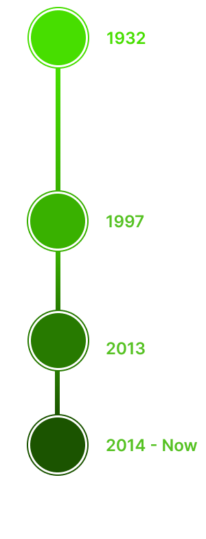

Sejarah
Sejarah Taman Nasional Kutai berawal dari seorang ahli pertambangan Belanda yang saat itu bekerja untuk BPM atau The Royal Batavian Oil Company. Saat itu, tepatnya pada tahun 1932, Ir. H. Witcamp memberikan usulan untuk
membangun kawasan Suaka Margasatwa Kutai Timur yang memiliki luas sekitar 2 juta hektar.
Status TNK yang sebelumnya disebut sebagai Hutan Inventaris, berubah menjadi Hutan resmi sejak dikeluarkannya Surat Keputusan Pemerintah Hindia Belanda Nomor: 3843/AZ/1934. Sebelah selatan berbatasan dengan Sungai Mahakam,
sebelah sebelah timur berbatasan dengan Selat Makassar hingga Sangkulirang, sebelah barat berbatasan dengan Sungai Wahau Telen, dan Sungai Kedang, dan sebelah utara berbatasan dengan Sungai Karangan dan Sungai Miau.
Sejak keberadaan taman nasional ini, konflik yang melibatkan berbagai kepentingan sering sering terjadi. Menurut berbagai data, sepanjang keberadaannya sejak tahun 1934 hingga 1997 telah telah terjadi pengurangan luas lahan
secara drastis. Luas lahan yang semula 2 juta hektar pada tahun 1997 pada tahun 1997 hanya tinggal 198.629 ha.
Pada tahun 2013 terjadi perubahan berdasarkan Keputusan Menteri Kehutanan Nomor 79/Kpts-II/2013 tanggal 15 Maret 2013 tentang Penunjukan Kawasan Hutan dan Perairan di Provinsi Kalimantan Timur dengan luas 14.651.553 ha.
pada tahun 2014 oleh Menteri Kehutanan menyatakan bahwa luas lahan kawasan ini ditetapkan menjadi 192.709,55 ha dan dikelola oleh Balai Taman Nasional Kutai.

Konservasi
Lebih dari 1.200 jenis tumbuhan hidup di kawasan ini, dengan tumbuhan khas yaitu ulin (Eusideroxylon zwageri) dan 8 dari 10 genus famili Dipterocarpaceae di dunia. Selain kekayaan flora, Taman Nasional Kutai juga memiliki
beragam jenis fauna. Kawasan ini memiliki 80% dari seluruh jenis burung di Borneo yaitu sebanyak 380 jenis, baik burung penetap maupun burung migran yang singgah pada musim tertentu.
Selain itu juga terdapat lebih dari separuh jenis mamalia Borneo yaitu sebanyak 80 jenis dan di antaranya adalah 11 dari 13 jenis primata Borneo, termasuk orangutan (Pongo pygmaeus) dan satwa endemik Kalimantan yaitu bekantan
(Nasalis larvatus).Puluhan jenis reptilia termasuk buaya muara (Crocodylus porosus), 195 jenis kupu-kupu termasuk jenis Troides helena, Troides amphrysus, dan Trogonoptera brookiana yang dilindungi, 32 jenis semut, 25 jenis
katak, serta ratusan jenis serangga dan satwa lainnya yang belum teridentifikasi hidup di kawasan ini.
Flora
Anggrek Hitam
(Coelogyne pandurata)
Pohon Ulin
(Eusideroxylon Zwageri)
Hutan Bakau
(Rhizophora sp.)
Pohon Meranti
(Shorea sp)
Bunga Rafflesia
(rafflesia sp)
Pohon Binuang
(Octomeles sumatrana Miq.)
Fauna
Orangutan
(Pongo pygmaeus)
Beruang Madu
(Helarctos malayanus)
Kangkareng Hitam
(Anthracoceros malayanus )
Bekantan
(Nasalis larvatus)
Kukang Kalimantan
(Nycticebus menagensis)
Buaya Muara
(Crocodylus porosus)
Wisata
Sebagai daerah yang masih alami, Taman Nasional Kutai juga memiliki daya tarik sebagai objek wisata.
Prevab Mentoko
Melihat langsung orangutan dari habitatnya. Inilah pengalaman yang bisa Anda dapatkan di Prevab Mentoko. Hanya dengan 30 menit perjalanan menggunakan perahu, Anda tidak akan bosan karena betapa hijau dan alaminya habitat
yang Anda lewati untuk mencapai tempat ini. Dalam perjalanan, jika Anda beruntung, Anda bisa melihat orangutan yang bergelantungan di pepohonan. Setelah sampai, Anda akan mendapatkan pengalaman melihat orangutan liar secara
langsung, yang tentunya berbeda dengan orangutan yang ada di kebun binatang.
Sangkima Jungle Park
Taman Rimba Sangkima adalah salah satu tujuan wisata di Taman Nasional Kutai. Tempat ini memiliki jembatan gantung yang merupakan tempat fotografi yang bagus dan lokasi salah satu pohon ulin terbesar di dunia. Area ini dapat
digunakan untuk wisata bahari dan juga untuk mengamati berbagai jenis satwa seperti rusa sambar, beruang madu, bekantan, burung, dan rusa.
Bontang Mangrove Park
Bontang Mangrove Park merupakan salah satu objek wisata di Taman Nasional Kutai. Tempat ini terbuka untuk umum dan memiliki jalur tracking sepanjang 2,5 km. Menyuguhkan potensi alam berupa hamparan ekosistem mangrove yang
sangat indah dengan keanekaragaman jenis vegetasi dan satwa di dalamnya. Kawasan hutan mangrove ini menawarkan suasana yang asri dengan luas mencapai 280 hektar. Di sepanjang jembatan ulin sepanjang 2 kilometer, mata
pengunjung akan dimanjakan dengan berbagai macam tanaman bakau yang beraneka ragam.